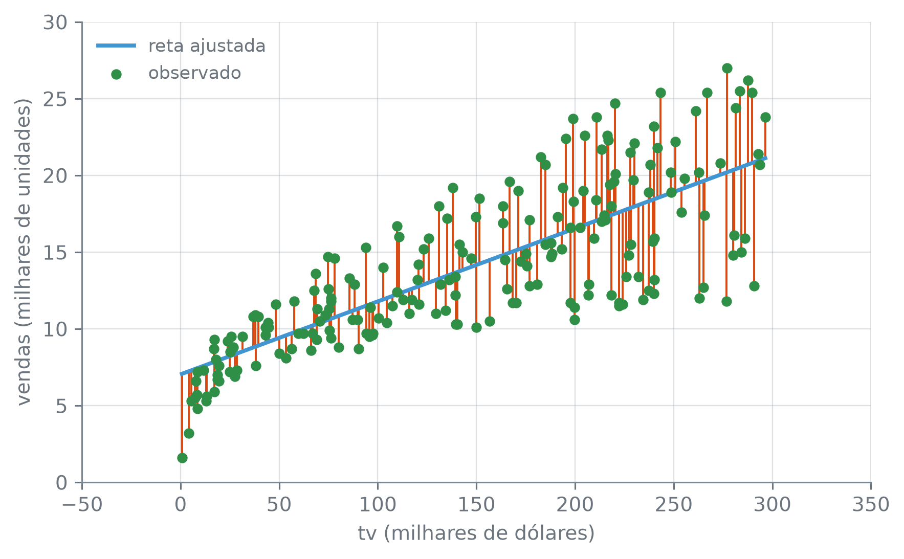
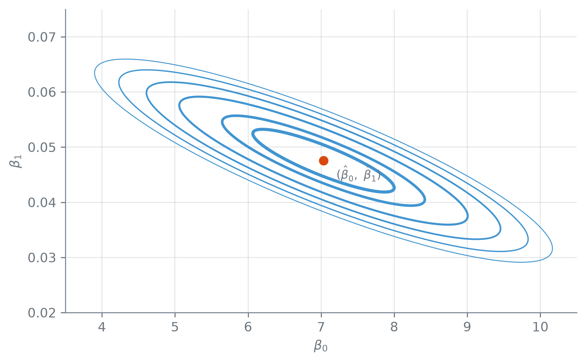

propaganda = pd.read_csv("dados/Advertising.csv")
propaganda.shape, propaganda.columns.tolist()((200, 4), ['tv', 'radio', 'jornal', 'vendas'])Esta seção corresponde às seções 3.1 e 3.1.1 de James et al. (2023).
Advertising traz o quanto duzentos mercados investiram em três mídias de propaganda — televisão, rádio e jornal — e quantas unidades do produto cada um vendeu. A pergunta mais simples que esse dado permite fazer é também a primeira: o investimento em TV, sozinho, ajuda a prever vendas? Regressão linear simples responde ajustando uma reta a exatamente dois números por mercado, tv e vendas, deixando radio e jornal de fora por enquanto.
((200, 4), ['tv', 'radio', 'jornal', 'vendas'])Duzentos mercados, quatro colunas — tv, radio, jornal e vendas, a primeira em milhares de dólares, a última em milhares de unidades. Regressão linear simples escreve a relação entre as duas que interessam aqui como
\[ \text{vendas} \approx \beta_0 + \beta_1 \cdot \text{tv}. \]
\(\beta_0\) e \(\beta_1\) são duas constantes, desconhecidas até se estimar: \(\beta_0\) é o intercepto — o valor esperado de vendas quando o investimento em TV é zero —, e \(\beta_1\) é a inclinação — o quanto vendas muda, em média, para cada unidade a mais de tv. O símbolo “≈” marca que a relação é uma aproximação: nada garante que dois mercados com o mesmo investimento em TV vendam exatamente o mesmo, e o quanto cada um foge da reta é o que o resto desta seção mede.
Uma vez que se tem estimativas \(\hat\beta_0\) e \(\hat\beta_1\), a reta prevê
\[ \hat y_i = \hat\beta_0 + \hat\beta_1 x_i, \]
e o resíduo daquele mercado é a distância entre o que ele de fato vendeu e o que a reta previu para o mesmo investimento em TV:
\[ e_i = y_i - \hat y_i. \]
A soma dos quadrados dos resíduos (RSS) soma esse erro, ao quadrado, sobre os duzentos mercados:
\[ \text{RSS} = e_1^2 + e_2^2 + \cdots + e_n^2 = \sum_{i=1}^{n} \left(y_i - \hat\beta_0 - \hat\beta_1 x_i\right)^2. \]
Elevar ao quadrado, em vez de somar o valor absoluto de cada resíduo, pune um erro grande desproporcionalmente mais do que vários erros pequenos, e deixa RSS como uma soma de parábolas em \(\beta_0\) e \(\beta_1\) — uma superfície com um único fundo, que se acha por fórmula fechada em vez de busca. Ajustar a reta é escolher, entre todos os pares \((\beta_0, \beta_1)\) possíveis, o único que minimiza essa soma: é a esse critério que se dá o nome de mínimos quadrados.
O resíduo \(e_i = y_i - \hat y_i\) mede a distância entre um valor observado e o previsto pela reta. A soma dos quadrados dos resíduos (RSS) soma \(e_i^2\) sobre todas as observações. Mínimos quadrados é o critério que escolhe \(\hat\beta_0\) e \(\hat\beta_1\) minimizando RSS — nenhum outro par de coeficientes produz uma reta com RSS menor.
Minimizar RSS por cálculo — derivando em relação a \(\beta_0\) e a \(\beta_1\) e igualando as duas derivadas a zero — leva a uma fórmula fechada que depende só das médias de tv e vendas, e dos desvios de cada ponto em relação a elas:
\[ \hat\beta_1 = \frac{\displaystyle\sum_{i=1}^{n} (x_i - \bar x)(y_i - \bar y)}{\displaystyle\sum_{i=1}^{n} (x_i - \bar x)^2}, \qquad \hat\beta_0 = \bar y - \hat\beta_1 \bar x. \]
Não precisa de nenhuma biblioteca de otimização — dá para calcular direto com numpy:
tv = propaganda["tv"]
vendas = propaganda["vendas"]
tv_media = tv.mean()
vendas_media = vendas.mean()
beta1_mao = ((tv - tv_media) * (vendas - vendas_media)).sum() / ((tv - tv_media) ** 2).sum()
beta0_mao = vendas_media - beta1_mao * tv_media
round(tv_media, 2), round(vendas_media, 2), round(beta1_mao, 4), round(beta0_mao, 4), round(beta1_mao * 1000, 1)(np.float64(147.04),
np.float64(14.02),
np.float64(0.0475),
np.float64(7.0326),
np.float64(47.5))O investimento médio em TV é 147,04 (mil dólares); a venda média, 14,02 (mil unidades). A partir só dessas duas médias e dos desvios em relação a elas, \(\hat\beta_1\) sai 0,0475 e \(\hat\beta_0\), 7,0326. Como tv e vendas vêm as duas em milhares, \(\hat\beta_1 \times 1.000\) traduz a inclinação para a escala do dinheiro gasto: 47,5 — cada mil dólares a mais investidos em TV está associado, em média, a 47,5 unidades a mais vendidas.
LinearRegressionO scikit-learn resolve a mesma minimização sem passar pelas médias explicitamente. LinearRegression().fit(X, y) recebe o preditor e a resposta e devolve um objeto já ajustado, com a inclinação em .coef_ e o intercepto em .intercept_ — os dois como array e escalar do numpy, por isso o float(...) ao redor de cada um daqui em diante. X entra como o DataFrame que já veio do pandas, mesmo sendo de uma coluna só, sem nenhum .to_numpy(): o estimador aceita e devolve, em .feature_names_in_, o nome de coluna que recebeu.
X = propaganda[["tv"]]
y = propaganda["vendas"]
modelo = LinearRegression().fit(X, y)
beta1_sklearn = float(modelo.coef_[0])
beta0_sklearn = float(modelo.intercept_)
(
modelo.feature_names_in_,
(round(beta0_mao, 4), round(beta1_mao, 4)),
(round(beta0_sklearn, 4), round(beta1_sklearn, 4)),
bool(np.allclose([beta0_mao, beta1_mao], [beta0_sklearn, beta1_sklearn])),
)(array(['tv'], dtype=object),
(np.float64(7.0326), np.float64(0.0475)),
(7.0326, 0.0475),
True)feature_names_in_ guarda só tv, o único nome que o DataFrame de uma coluna carregava. Os dois pares de coeficiente — o calculado à mão e o que saiu do .fit() — são (7,0326; 0,0475) nos dois casos, e np.allclose confirma: True. É a mesma fórmula fechada por trás das duas contas; a segunda só evita escrever as médias à mão.
yhat = modelo.predict(X)
grade_tv = np.linspace(tv.min(), tv.max(), 200)
reta_grade = modelo.predict(pd.DataFrame({"tv": grade_tv}))
fig, ax = plt.subplots()
ax.vlines(tv, np.minimum(vendas, yhat), np.maximum(vendas, yhat), color="C1", linewidth=1)
ax.plot(grade_tv, reta_grade, color="C0", linewidth=2, label="reta ajustada")
ax.scatter(tv, vendas, color="C2", s=18, zorder=3, label="observado")
ax.set_xlabel("tv (milhares de dólares)")
ax.set_ylabel("vendas (milhares de unidades)")
ax.legend()
plt.tight_layout()
plt.show()
A reta captura a tendência — vender mais conforme se investe mais em TV —, mas nenhum mercado senta exatamente sobre ela: sempre sobra um segmento. Somar o quadrado dos duzentos segmentos desta figura dá exatamente o RSS que a reta minimiza:
2.102,53 — nenhuma outra reta, entre todos os pares \((\beta_0, \beta_1)\) possíveis, soma menos que isso.
RSS, como soma de quadrados de uma função linear de \(\beta_0\) e \(\beta_1\), é uma superfície convexa nesses dois parâmetros: um paraboloide elíptico, sem platôs nem mínimos locais além de um único ponto. Variando \(\beta_0\) e \(\beta_1\) numa grade ao redor de \((\hat\beta_0, \hat\beta_1)\) e calculando RSS em cada combinação, essa forma aparece em curvas de nível — cada uma liga os pares que produzem o mesmo RSS.
grade_beta0 = np.linspace(3.5, 10.5, 300)
grade_beta1 = np.linspace(0.02, 0.075, 300)
malha_beta0, malha_beta1 = np.meshgrid(grade_beta0, grade_beta1)
tv_np = tv.to_numpy()
vendas_np = vendas.to_numpy()
residuo_grade = vendas_np - malha_beta0[:, :, None] - malha_beta1[:, :, None] * tv_np
rss_grade = (residuo_grade ** 2).sum(axis=2)
niveis_rss = np.array([2150.0, 2200.0, 2300.0, 2400.0, 2500.0, 2600.0])
larguras_das_curvas = [2.4, 2.0, 1.6, 1.3, 1.0, 0.7]
fig, ax = plt.subplots()
contornos = ax.contour(
malha_beta0, malha_beta1, rss_grade,
levels=niveis_rss, colors="C0", linewidths=larguras_das_curvas,
)
ax.scatter([beta0_sklearn], [beta1_sklearn], color="C1", s=40, zorder=3)
ax.annotate(
r"$(\hat\beta_0,\ \hat\beta_1)$",
xy=(beta0_sklearn, beta1_sklearn),
xytext=(10, -14),
textcoords="offset points",
fontsize=9,
)
ax.set_xlabel(r"$\beta_0$")
ax.set_ylabel(r"$\beta_1$")
plt.tight_layout()
plt.show()
A legenda promete curvas fechadas, então a afirmação se confere contando, não olhando: o próprio objeto que o contour devolve guarda, para cada nível, os segmentos de linha que desenhou, e um segmento fecha quando termina no mesmo ponto em que começou.
segmentos_totais = 0
segmentos_fechados = 0
for segmentos_do_nivel in contornos.allsegs:
for segmento in segmentos_do_nivel:
if len(segmento) == 0:
continue
segmentos_totais += 1
if np.allclose(segmento[0], segmento[-1]):
segmentos_fechados += 1
segmentos_totais, segmentos_fechados, segmentos_fechados == segmentos_totais(6, 6, True)Seis níveis, seis segmentos desenhados, e os seis fecham: segmentos_totais e segmentos_fechados saem iguais, 6 e 6. Nenhuma curva sai cortada pela borda da janela — o que confirma, em vez de supor, que RSS tem um único vale nesta vizinhança de \((\hat\beta_0, \hat\beta_1)\).
(2102.53, 2102.56, True)O mínimo verdadeiro, 2.102,53, fica abaixo até do menor valor que a própria grade alcança, 2.102,56 — minimo_real_menor_que_grade é True. Nenhum dos 300×300 pontos testados coincide exatamente com \((\hat\beta_0, \hat\beta_1)\), só passa perto: é a fórmula fechada, não a grade, que encontra o fundo do vale de verdade. RSS diz qual par de coeficientes é o melhor entre os que este dado observou; não diz se essa reta presta para prever vendas em geral, nem quanto de vendas ela de fato explica.